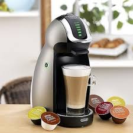

Espressor cu capsule
Espresoarele cu capsule sunt rapide și curate. Utilizează capsule pre-porționate, oferind o cafea standardizată fără efort.
Avantaje:
- Ușor de utilizat și întreținut.
- Preparare rapidă.
- Design compact.
Dezavantaje:
- Cafeaua nu poate fi personalizată.
- Costuri ridicate ale capsulelor.
- Impact ecologic din cauza deșeurilor de capsule.